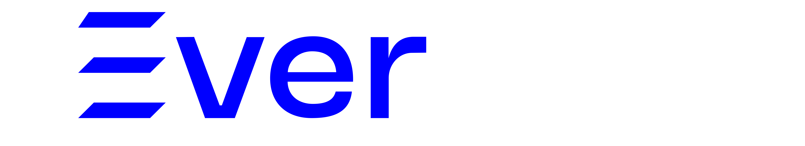

Kimliğin
Kontrole hazırBu numarayı karşı tarafa ver, bilgisayarını kontrol edebilsin.
— — —
Uzaktan Bağlan
Bağlanmak istediğin bilgisayarın 9 haneli kimliğini gir.

DeskBu numarayı karşı tarafa ver, bilgisayarını kontrol edebilsin.
Bağlanmak istediğin bilgisayarın 9 haneli kimliğini gir.